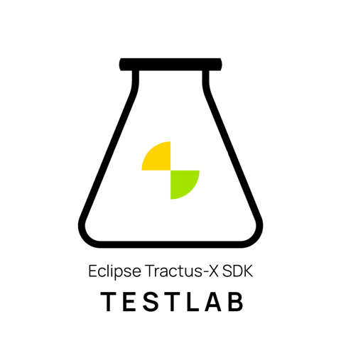

Tutorial site
E2E tests for Tractus-X products
Give your product an end-to-end test that runs on every pull request. Build it in about an hour with an AI assistant in the Test Suite IDE.
- Community Days 2026
- Developers
- With AI